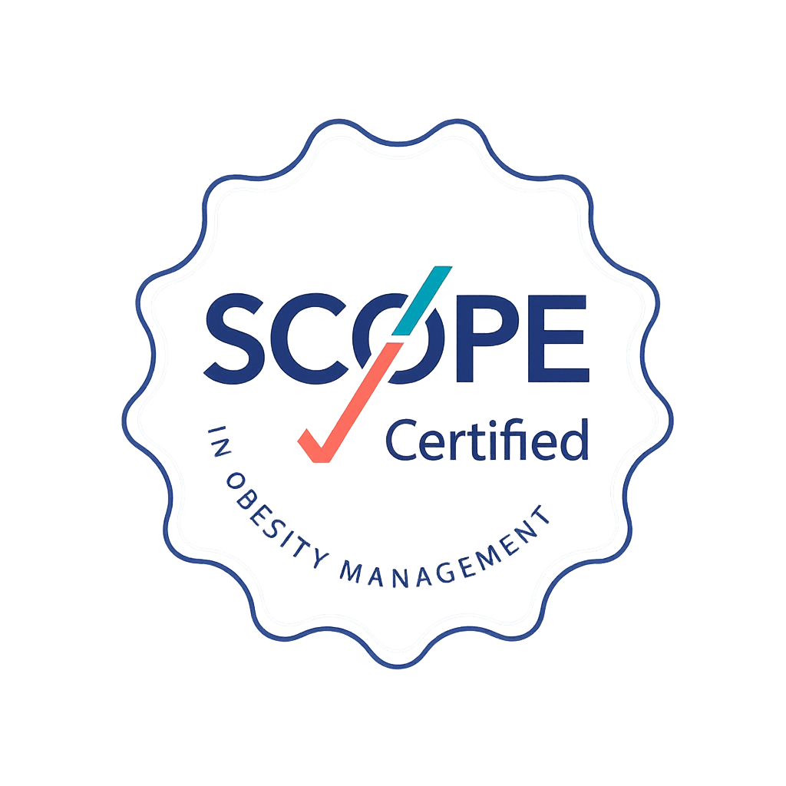
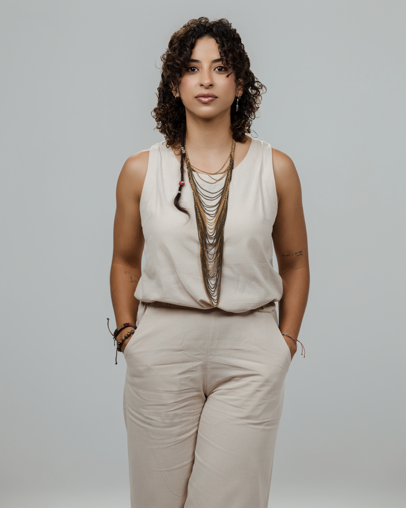

Dra. Laura Orozco Montero
Medicina Metabólica & Estética
Te acompaño a entender tu metabolismo y construir cambios sostenibles. Mi enfoque integra ciencia, empatía y medicina estética segura, coherente con tu salud interna.


La obesidad no es un problema de voluntad, sino una enfermedad crónica y metabólica que afecta al cuerpo de formas muy distintas de una persona a otra.
¿Sabes cómo está tu metabolismo?
Descubre en 3 minutos tu perfil de riesgo metabólico en 6 dimensiones clave. Sin costo, sin compromiso.
Libre de estigma · Resultados orientativos

En menos de 5 minutos te explicamos por qué las dietas y el ejercicio por sí solos no funcionan a largo plazo, y cómo el Método Renace aborda la causa metabólica, psicológica y física de la obesidad al mismo tiempo.
Duración aproximada: 4–5 min
Un paciente que vivió el proceso completo cuenta, en sus propias palabras, cómo cambió su relación con su cuerpo y su salud.
"Tanto la ayuda profesional, el compromiso y la disciplina definitivamente fueron el mejor cambio en mi vida."
Abordamos la obesidad desde cuatro áreas que siempre interactúan:
Nuestra metodología es el corazón del tratamiento: un proceso clínico paso a paso para entender, intervenir y sostener cambios reales.
Tu cuerpo no está fallando: está respondiendo a algo.
Un equipo interdisciplinario certificado en obesidad, metabolismo y salud integral
Te acompaño a entender tu metabolismo y construir cambios sostenibles. Mi enfoque integra ciencia, empatía y medicina estética segura, coherente con tu salud interna.
Evaluo de forma integral los factores metabólicos que influyen en el peso y creo estrategias clínicas personalizadas. También abordo estrés y bienestar emocional en el contexto laboral.
Trabajo por etapas para encontrar causas raíz y crear una alimentación sostenible. Integro metabolismo, digestión, inflamación y hábitos para mejorar tu energía y bienestar.

Te acompaño a trabajar emociones, autoestima y patrones que influyen en tu salud. Construimos herramientas prácticas para sostener cambios reales sin culpa.
Mi enfoque es cercano y libre de estigma. Trabajamos relación con la comida, ansiedad y autocuidado para que tu proceso sea sostenible y humano.

Evalúo movilidad, dolor y limitaciones para diseñar un plan seguro y progresivo. El objetivo es moverte mejor, con menos dolor y más confianza.
Te acompaño a incorporar actividad física de forma segura. Integro fuerza, movilidad y control motor para mejorar condición física, composición corporal y bienestar general.
No es una dieta más. Es un abordaje clínico, medible y sostenido en el tiempo.
Médica, nutricional, psicológica, física, sueño y ambiental — no solo la báscula.
Un solo equipo interdisciplinario coordinado, no consultas aisladas.
Basados en tu propia historia metabólica, no en protocolos genéricos.
Un espacio clínico, cercano y libre de juicio en cada etapa del proceso.
Este proceso funciona mejor cuando hay compromiso real de ambas partes. Cuéntanos un poco de ti para saber cómo acompañarte.
Agenda tu diagnóstico clínico y estético, o escríbenos para recibir más información sobre el Método Renace.
Agenda tu cita de forma rápida y segura.
Evalúa en 3 minutos las 6 dimensiones que explican por qué bajar de peso puede ser tan difícil — y obtén tu perfil de riesgo metabólico personalizado.
Resultados orientativos — no sustituyen una evaluación clínica · Renace Medical Center, Heredia